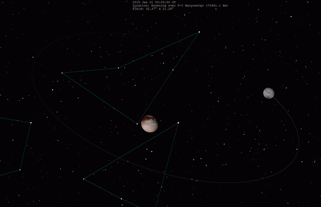

Charon as seen by New Horizons
Charon is the biggest of the five satellites of Pluto and is the only round one, with a diameter of about 1,212 kilometers - just over half that of Pluto itself.
It was discovered by James Christy and Robert Harrington in 1978 and is named after the ferryman of the underworld.
It is so big compared to Pluto, that the barycenter lies outside of it and both objects are tidally locked to each other.
For that reason some refer to Pluto and Charon as a binary system.
Charon’s surface is a mix of water ice and darker material, with a prominent reddish tholin-covered cap at its north pole (Mordor Macula).
The most striking feature is a system of chasms and cliffs that stretch for hundreds of kilometers similar to Miranda, a moon of Uranus.
Unlike Pluto, Charon lacks a substantial atmosphere, though there is evidence of a very thin one.
Charon has been visited by the New Horizons mission.
Charon was discovered by James Christy and Robert Harrington by accident in 1978 when the two were trying to recalculate more precisely Pluto's orbit.
The location where Charon was discovered, the U.S. Naval Observatory in Flagstaff, Arizona, is not far from the Lowell Observatory, where Clyde Tombaugh discovered Pluto.
Christy noticed a bulge appearing on some of the images of Pluto and dissapearing on others, with a period of 6.39 days.
James Christy first suggested Oz, then the name Charon, derived from his wife Charlene.
Christy stuck with that name after realizing it was coincidentally the name of the Greek mythological figure Charon (Χάρων) - the ferryman of the dead and closely associated with the god Hades/Pluto.
The only difference between the Charlene nickname and the mythological ferryman was in the pronounciation of the "ch".
The IAU officially adopted the name in late 1985, and it was announced the following year.
Another popular proposal was Persephone, the wife of Hades, but there is already an asteroid with the same name.

Pluto and Charon orbiting around their common barycenter. Source
Orbit and rotation
It takes 6.387 days for both Pluto and Charon to complete one rotation and orbit around a common barycenter.
This is because they are mutually tidally locked.
The average distance between the two is about 19,596 kilometers.
Charon orbits the common barycenter at a distance of 17,181 kilometers.
Charon has bot a very low eccentricity and a very low inclination.
Charon's diameter is 1,212 km, slightly more than half of that of Pluto.
Relative to Pluto, it is bigger than the relative size of the Moon compared to Earth.
The sheer size of Charon moves the barycenter of the system outside of Pluto.
For that reason, the Pluto-Charon system is sometimes refered to as a binary.
With a density of 1.7 g/cm^3 it can be determined that Charon is slightly less dense than Pluto and suggests a composition of 55% rock to 45% ice.
Charon's surface strongly suggests internal differentiation and may even have had a subsurface ocean in the past.
Many of the surface features are likely due to cryovolcanic activity from the subsurface ocean.
There exist two competing theories on the nature of Charon's interior.
The so-called "hot start" model suggests Charon's formation is rapid and involved a violent impact with Pluto.
Charon would have accreted rapidly, resulting in a lot of heat trapped within it and partially melting the mantle.
For that reason, the interior differentiated partially, retaining some silicate on the surface.
Depending on how much the silicate is in the form of finer particles, the interior could be divided into a silicate core, a small ammonia dihydrate ice layer surrounded by a water ice mantle, and a silicate/water ice crust, or a smaller core and outer layers mixed with more silicate fines.
The "cold start" model, however, proposes Charon had a less violent impact with Pluto and thus had a less intense development.
The features would not have formed from a vast subsurface ocean.
Instead, the interior would have been more porous, and with time Charon would have compacted, leading to the formation of a small subsurface ocean.
In this model, the interior is divided into an anhydrous silicate inner core, a transitional layer, a hydrous silicate outer core, a pure crystalline water ice mantle layer, and several more layers of amorphous water ice and silicates up to the crust.
Two-toned terrain on Charon - Mordor Macula to the north and Oz Terra to the south (enhanced color.)
Charon, just like Pluto, has a surface with several unique regions and surfaces.
On the surface, Charon is covered by an ice water crust with a significant amount of silicate rock, giving it a grayish color.
The north polar region, known unofficially (as it is the case with most names) as Mordor Macula, is different, having a reddish-brown color.
The more saturated pole is ulually due to organic compounds, known as tholins, that have formed as a result of a chemical reaction between nitrogen and hydrocarbons like methane, triggered by cosmic and UV radiation.
It is unknown how Mordor Macula formed, since Charon lacks the nitrogen and methane that are abundant on Pluto.
One possibility is that gases from Pluto's atmosphere escaped and were then deposited onto the pole.
So far only the north pole has been observed and it is unknown whether a similar spot appears on the south pole.
The Pluto-facing hemisphere of Charon has been divided into two other regions - Oz Terra in the north and Vulcan Planitia in the south.
These regions are separated by a series of continuous scarps near, particularly Serenity Chasma and Mandjet Chasma.
Within Vulcan Planitia, a feature known as Kubrick Mons might be an extinct cryovolcano.
It is also weirdly shaped, as it is surrounded by a "moat" from which it rises.
The far side of Charon, which has been imaged from a greater distance. Mordor Macula and an unnamed crater (lower right) can be discerned.
There are few craters on the surface of Charon, suggesting geologic activity in the past.
Largest known crater is Dorothy, on the edge between Oz Terra and Mordor Macula.
Other craters include Pirx, Nasreddin, Kirk, Uhura, and more.
The far side of Charon has been imaged by New Horizons, but at a low resolution, so no features have been identified by the scientific team.
What can be seen is that the terrain is similar in color to the Oz and Vulcan regions, and likely crossed by multiple scarps.
One visible feature is an unnamed crater near the Equator.
The 9 meter-deep Argo Chasma on the edge of the two hemispheres has an arc shape and could be the edge of a large impact crater larger than Dorothy, or a smooth plain.
This is uncorfirmed and could easily be a speculation.
The south pole has not been imaged due to it remaining in complete darkness during the flyby,
Charon could potentially have a very tenuous exosphere, made up of gases like nitrogen, carbon dioxide and even water vapors.
In January 2006, the New Horizons mission was launched to exolre the Pluto-Charon system.
It took its first images in June 2015, revealing the planetary-like moon and its intriguing surface.
Like Pluto, a significant portion of Charon remained in darkness during the flyby.
External links
{% include catnatural-satellites.html %}
{kind=link}